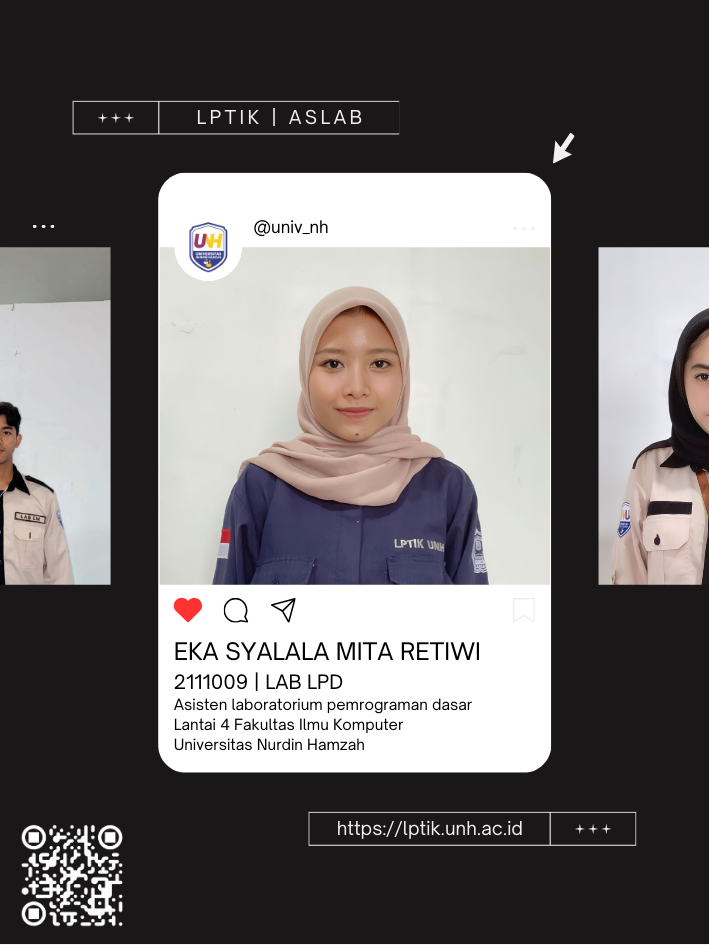
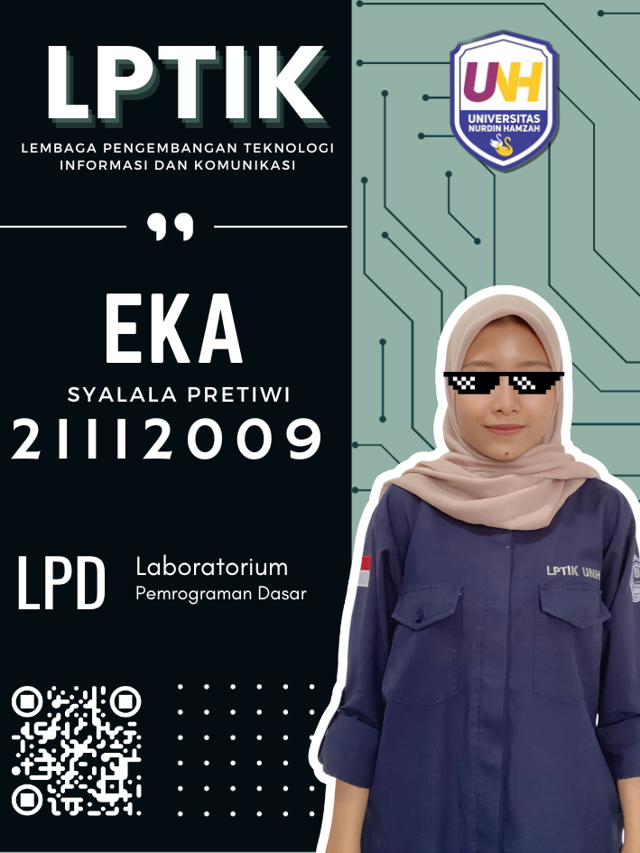
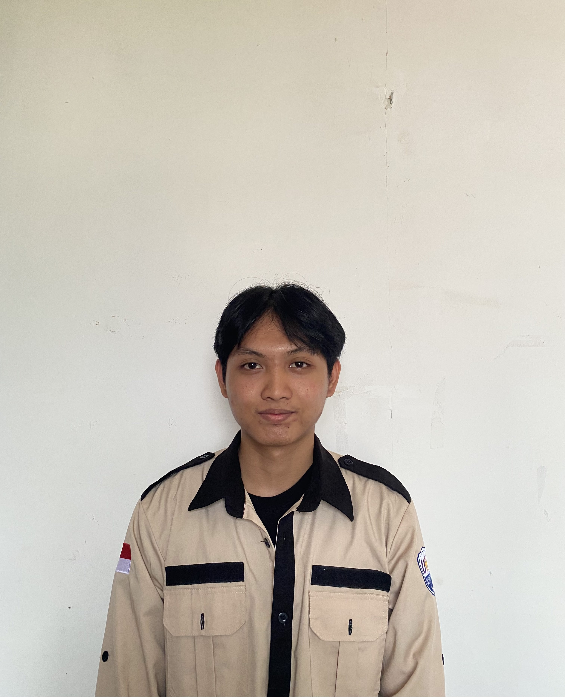
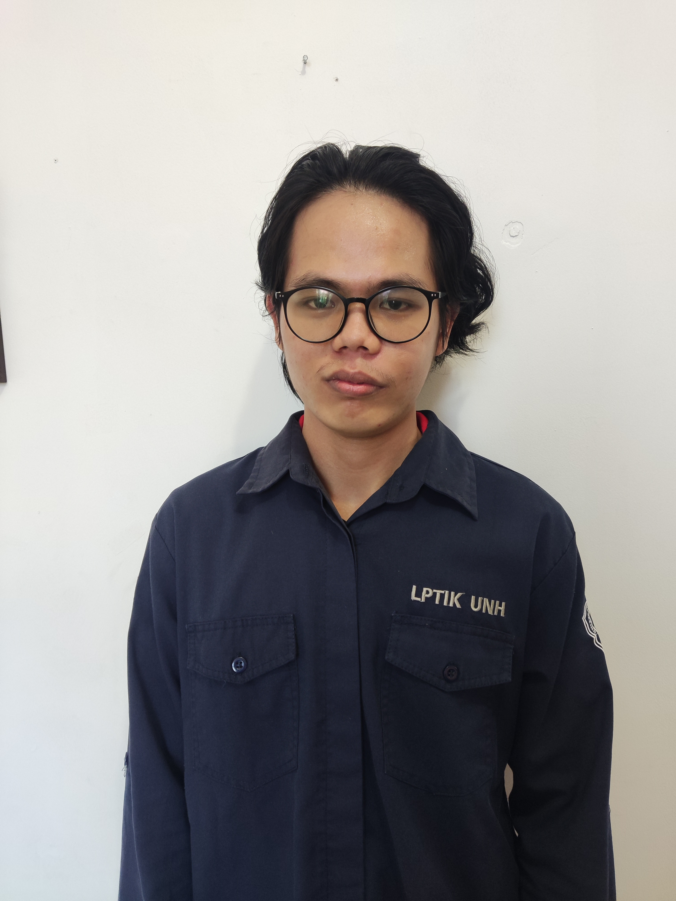
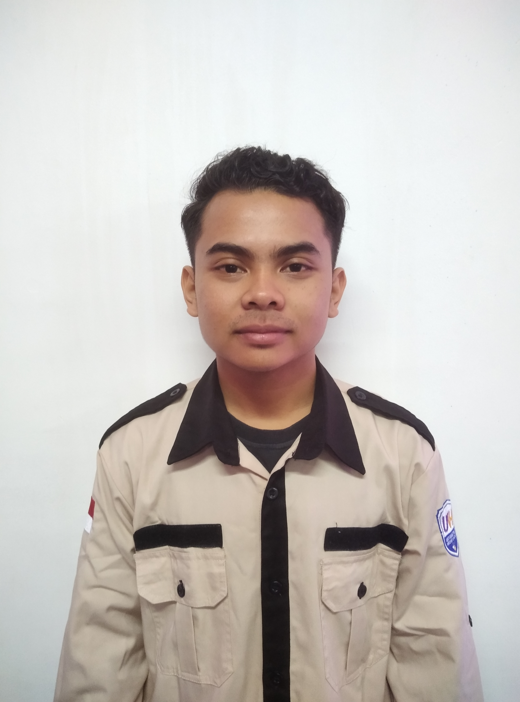
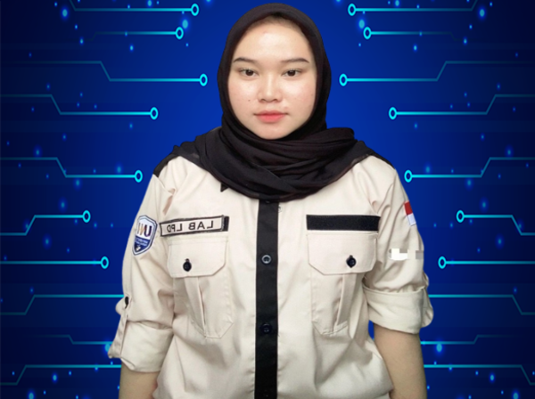
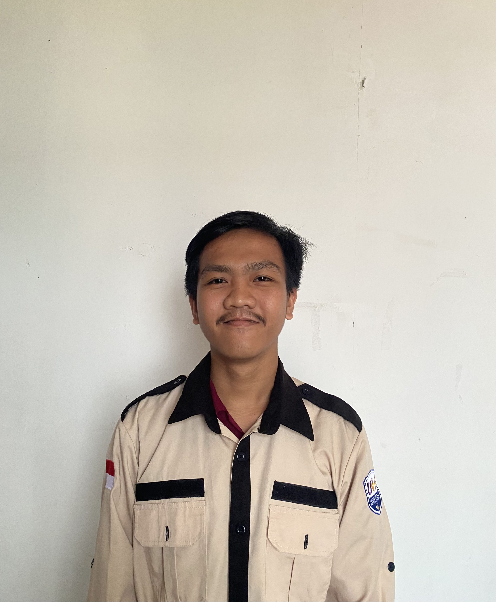
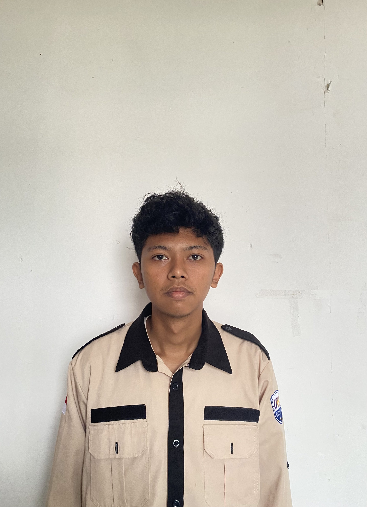

GAMBAR BERGERAK
Muhammad Juzairi Safitli | NIM 21111073








Deskripsi Tugas
Membuat 10 gambar bergerak menggunakan variabel Marquee, diamana 10 gambar memiliki link atau target destinasi ketika diklik. TAMBAHAN: Berhenti ketika mouse mendekat